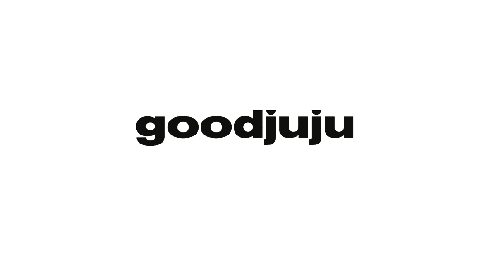

Leftovers
The original Goodjuju Studios website featured large 3D animation .GIFs of the logo. While visually interesting, the studio wanted to pivot away from abstract imagery and instead highlight photography.
The current website features stock and free-to-use photography, but also a number of original photographs.
While a loading animation existed for the original website (and necessary for the long load times partially due to the .GIFs), one was not created for the rebrand. While some efforts were made to accomplish the same jumpy effect, it was decided that the tone of this animation was not aligned with the new branding system. Some logo animations were used instead for email signatures. These can be seen in my Outtakes.
